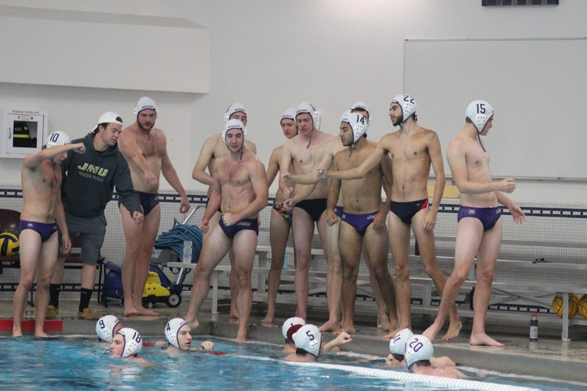
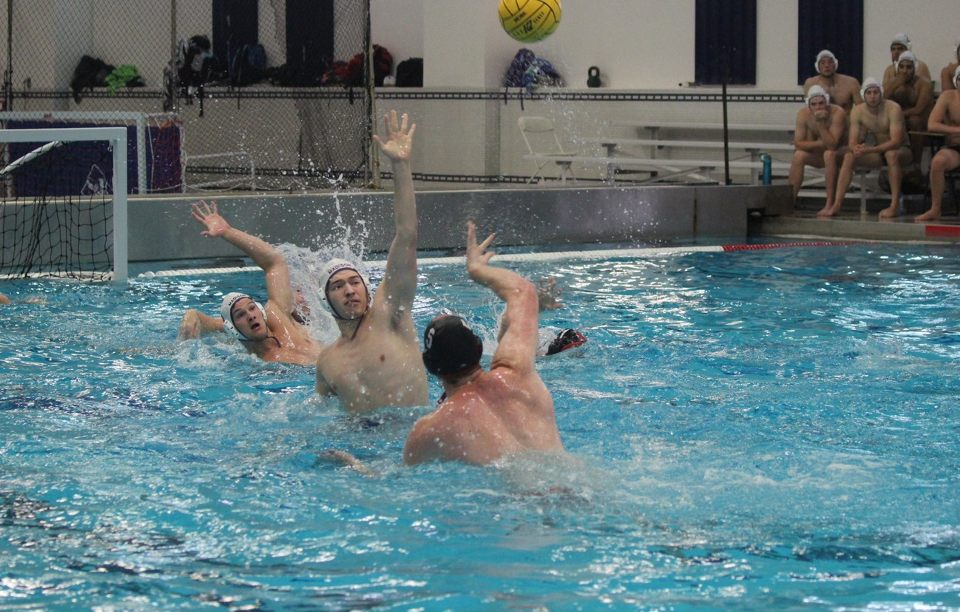
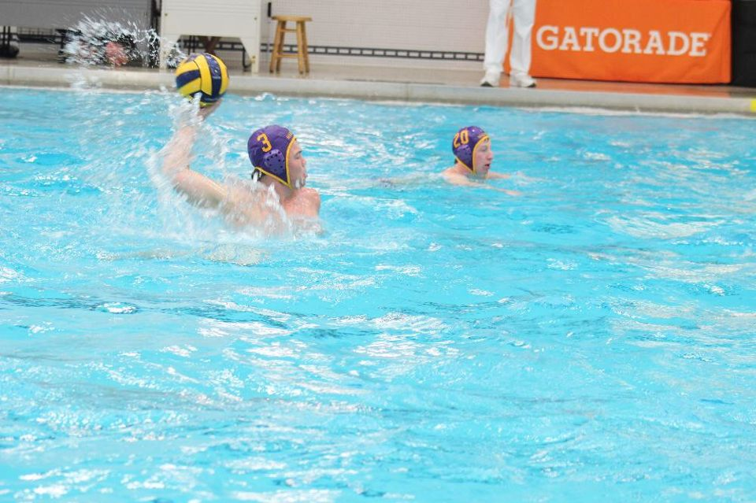
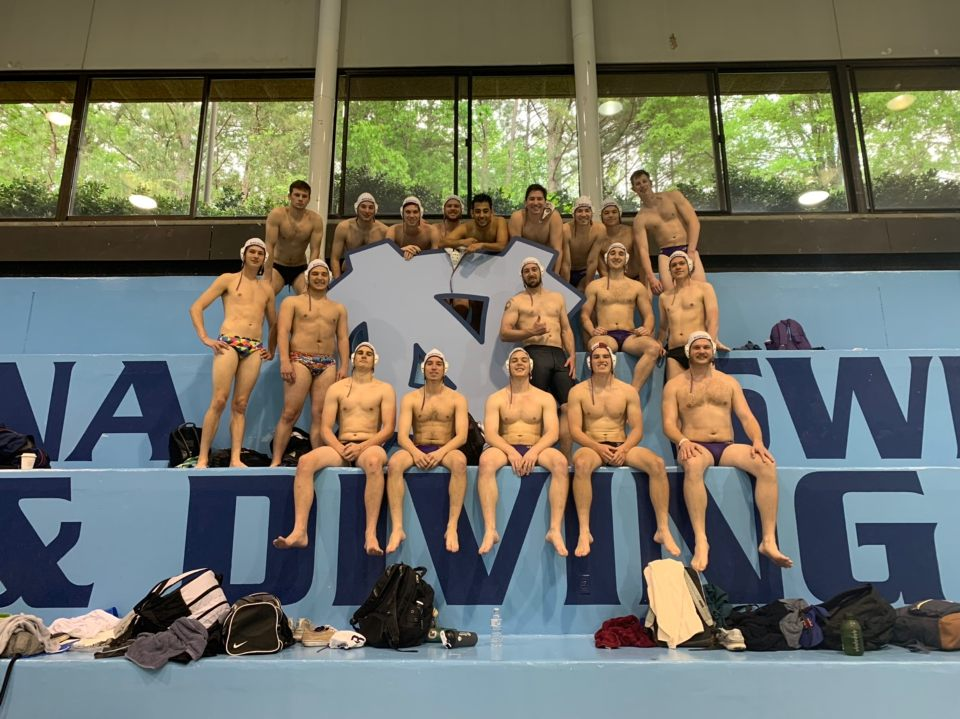
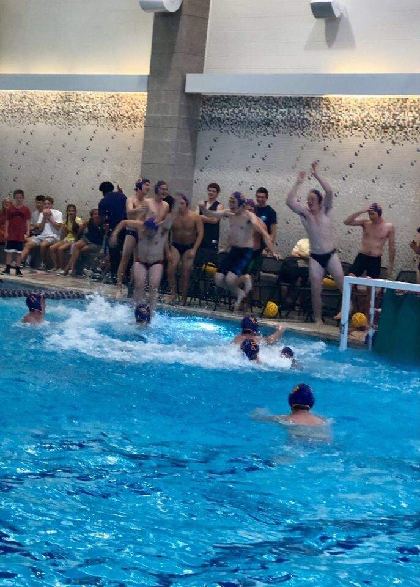

Our team is a registered team with the Collegiate Water Polo Association (CWPA). The CWPA runs and monitors most of the collegiate water polo
across the country. Our team is in the Atlantic Division for the CWPA. In this divison there are 2 subdivisions, the North and South.
Our team competes in the Northern division, which contains U.S. Naval Academy, Georgetown University, and Maryland.
The Southern division contains the teams from the University of Virginia, Virginia Tech, University of North Caronlina, North Carolina State University, University of North Carolina-Wilimington, and Wake Forest University.
Each year during our competitive season (Fall semester) we have three to four regular season tournaments and one championship tournament held at the U.S. Naval Academy.
The three regular season tournamentare held at JMU, Maryland, NC State, and sometimes at UNC if they decide to host a tournament.
In our off season we always have one big tournament over easter weekend at UNC, where we play six to seven games over two days.
The team talking after the first half of playing.Jacob Bisket deflecting a shot at our championship tournament.Nate passing the ball at a Maryland tournament.JMU team posing after our spring tournament at UNC.JMU celebrating after upsetting Virginia Tech.